自动航行地图 · 重建素材包
按参考截图分层重绘。以下合成用于预览素材关系，具体城市位置、航线节点和锚点可在引擎中调整。
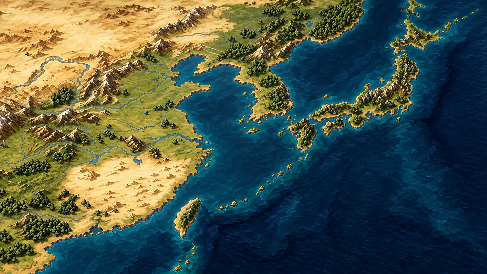
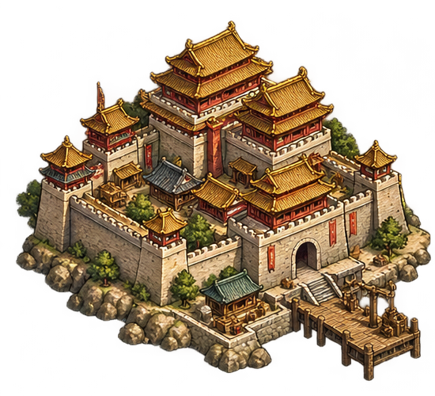
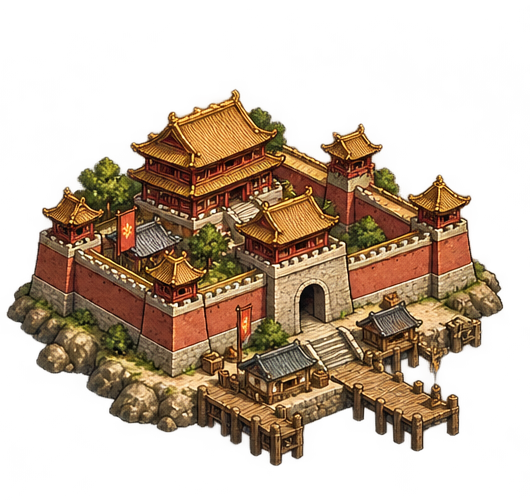
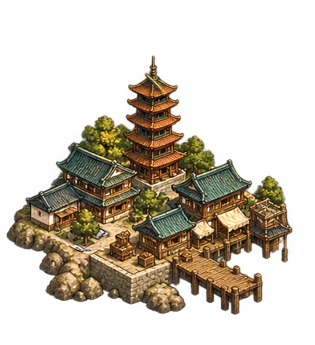
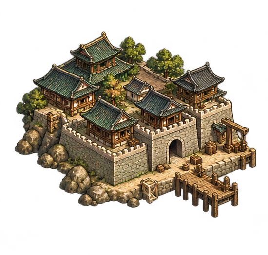
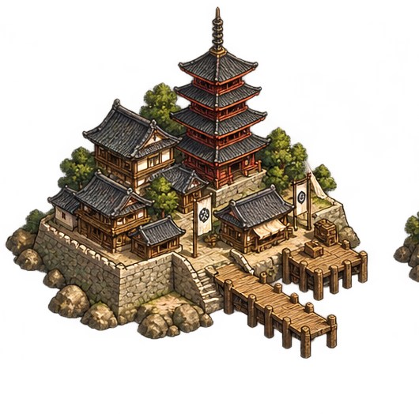
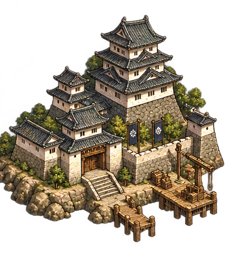
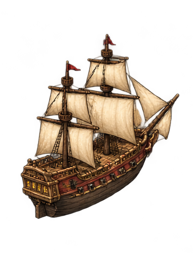
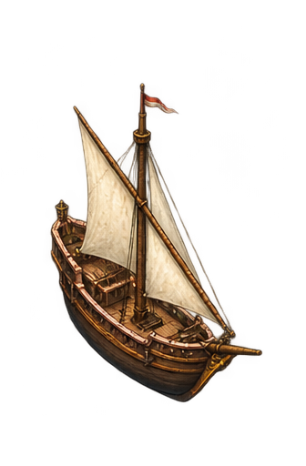
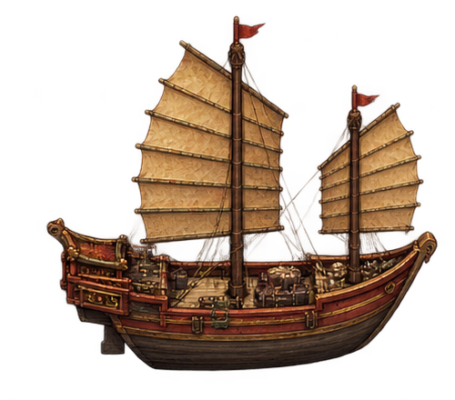
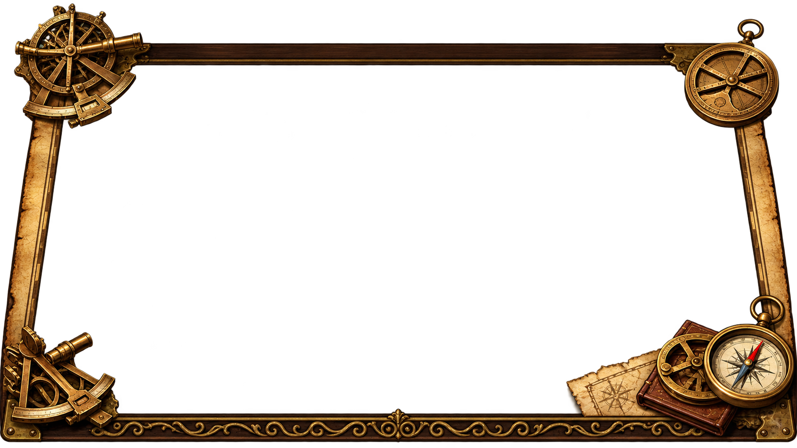
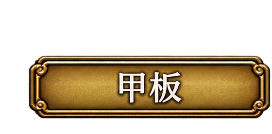
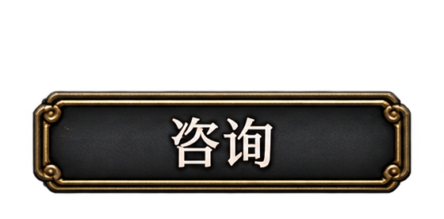
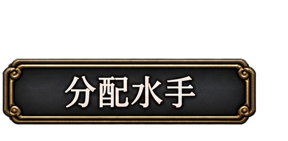
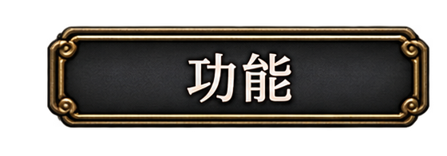
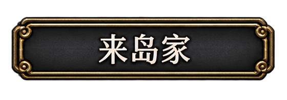
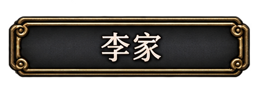
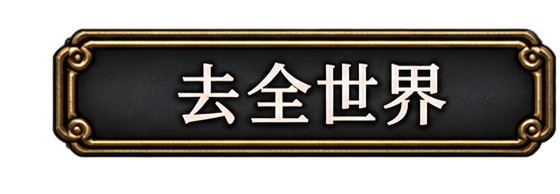
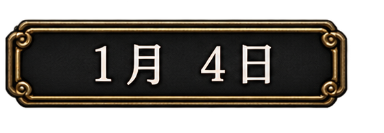
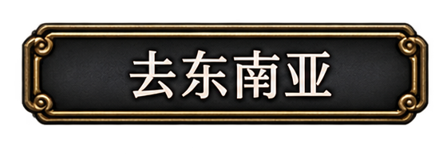
船只 · 三种帆型 × 八方向
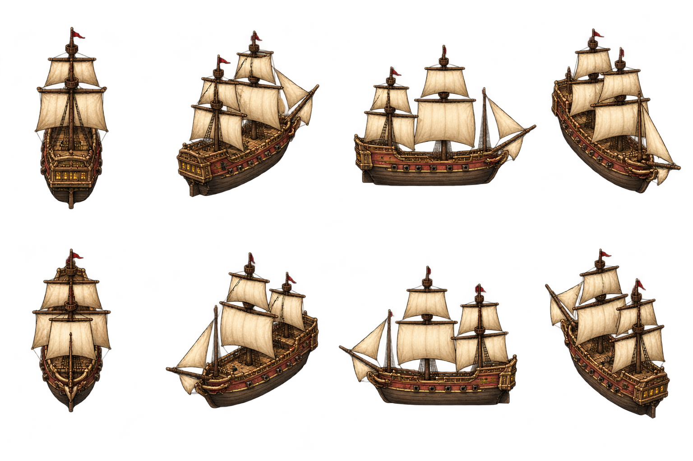
square / 原始八方向图集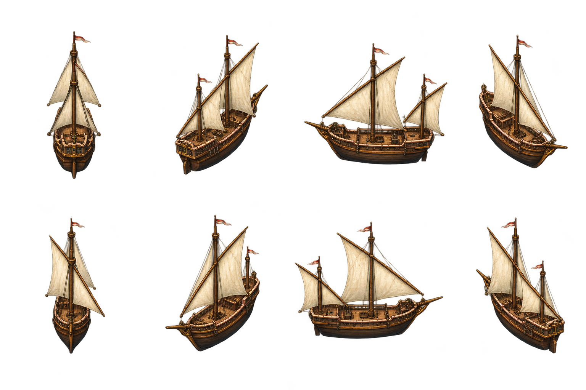
lateen / 原始八方向图集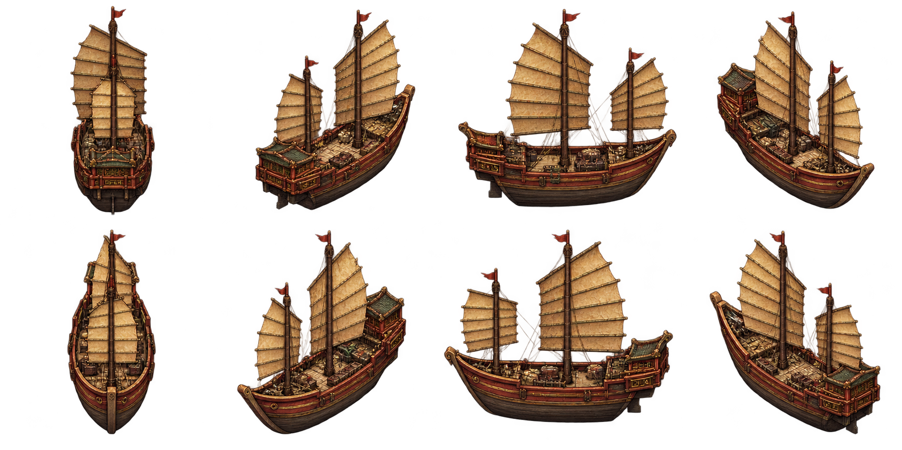
junk / 原始八方向图集洋流 · 32 帧循环 / 16 fps
同时提供透明 PNG 序列、8×4 图集和可直接播放的 SVG。白色曲线沿路径流动，周期 2 秒。
控制界面
deckconsultassign_sailorsfunctionsfaction_kurushimafaction_ligo_worldgo_southeast_asiadate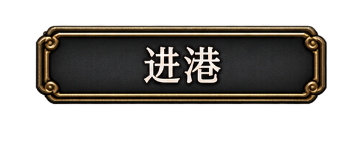
enter_port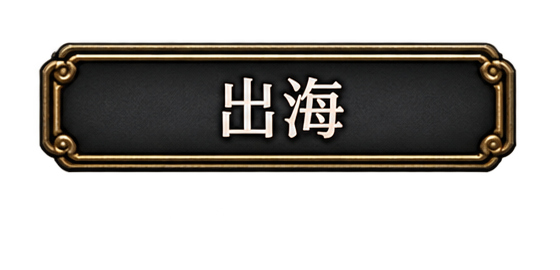
leave_port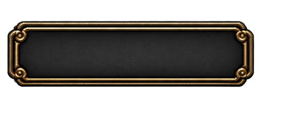
plaque_blank 城市城楼
chinese_palacechinese_walled_portchinese_pagoda_portkorean_portjapanese_pagoda_portjapanese_castle
地图和边框
东亚地形与海深底图倾斜边框与四角航海仪器
航线与港口选中圈
route_normalroute_selectedport_selected
界面解析与素材说明 · 资源清单 · 生成提示词